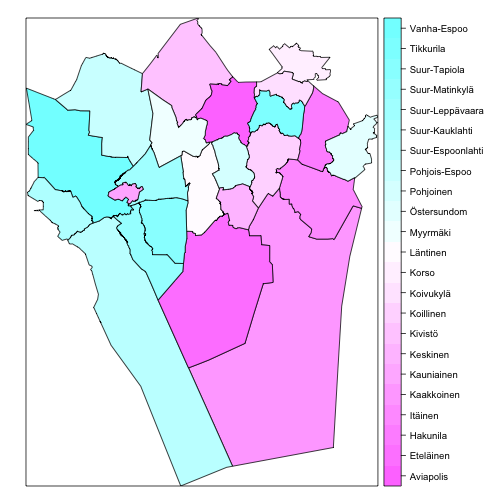
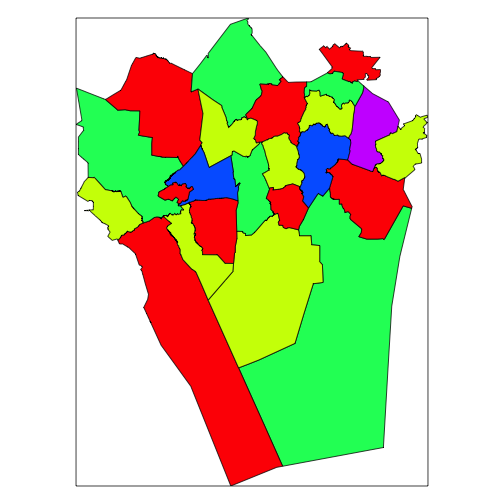
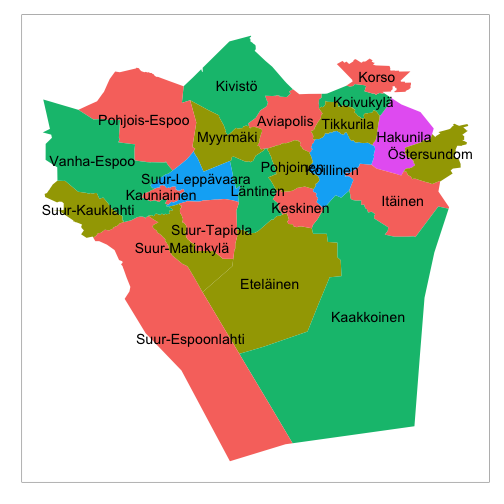
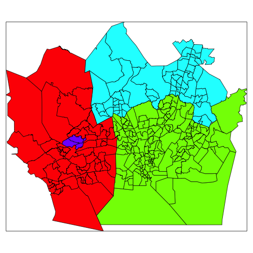
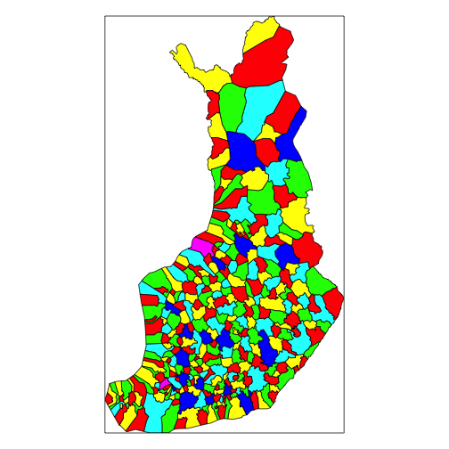
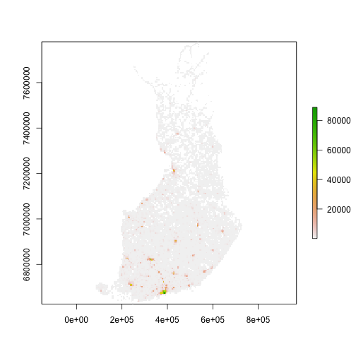

gisfin v0.9.16
gisfin - tutorial
This R package provides tools to access open spatial data in Finland as part of the rOpenGov project.
For contact information and source code, see the github page
Available data sources
Helsinki region district maps (Helsingin seudun aluejakokartat)
- Aluejakokartat: kunta, pien-, suur-, tilastoalueet (Helsinki region district maps)
- Äänestysaluejako: (Helsinki region election district maps)
- Source: Helsingin kaupungin Kiinteistövirasto (HKK)
Helsinki spatial data (Helsingin seudun avoimia paikkatietoaineistoja)
- Seutukartta (Helsinki Region Maps)
- Helsingin piirijako (District Division of the City of Helsinki)
- Seudullinen osoiteluettelo (Regional Address List)
- Helsingin osoiteluettelo (Register of Addresses of the City of Helsinki)
- Rakennusrekisterin ote (Helsinki building registry)
- Source: Helsingin kaupungin Kiinteistövirasto (HKK)
National Land Survey data (Maanmittauslaitoksen avointa dataa)
- Yleiskartat: kunta-, maakuntarajat (municipality and province borders)
- Source: Maanmittauslaitos (MML)
IP address geographic coordinates
Statistics Finland geospatial data (Tilastokeskuksen paikkatietoaineistoja)
- Väestöruutuaineisto (Population grid)
- Tuotanto- ja teollisuuslaitokset (Production and industrial facilities)
- Oppilaitokset (Educational institutions)
- Tieliikenneonnettomuudet (Road accidents)
- Source: Statistics Finland
List of potential data sources to be added to the package can be found here.
Installation
Requirements
The gisfin package uses the rgdal package, which depends on GDAL (Geospatial Data Abstraction Library). Some rgdal installation tips for various platforms are listed below. If you encounter problems, please contact us by email: louhos@googlegroups.com.
Windows
Install binaries from CRAN
OSX
It is preferable to NOT use the CRAN binaries. Instead, you should check KyngChaos Wiki and install the latest GDAL Complete (v. 1.11 in July 2014) and then install the corresponding rgdal package from the same page (v. 0.8.16 in July 2014).
Linux
Install the following packages through your distribution’s package manager
Ubuntu/Debian
sudo apt-get -y install libgdal1-dev libproj-dev
Fedora
sudo yum -y install gdal-devel proj-devel
openSUSE
sudo zypper --non-interactive in libgdal-devel libproj-devel
Installing the package
Release version for general users:
install.packages("gisfin")Development version for developers:
install.packages("devtools")
library(devtools)
install_github("gisfin", "ropengov")Load package.
library(gisfin)Helsinki region district maps
Helsinki region district maps (Helsingin seudun aluejakokartat) from Helsingin kaupungin Kiinteistövirasto (HKK).
List available maps with get_helsinki_aluejakokartat().
get_helsinki_aluejakokartat()## [1] "kunta" "pienalue" "pienalue_piste"
## [4] "suuralue" "suuralue_piste" "tilastoalue"
## [7] "tilastoalue_piste" "aanestysalue"Below the ‘suuralue’ districts is used for plotting examples with spplot() and
ggplot2. The other district types can be plotted
similarly.
Plot with spplot
Retrieve ‘suuralue’ spatial object with get_helsinki_aluejakokartat() and plot
with spplot().
sp.suuralue <- get_helsinki_aluejakokartat(map.specifier="suuralue")
spplot(sp.suuralue, zcol="Name")
Function generate_map_colours() allows nice region colouring separable
adjacent regions. This is used here with the rainbow() colour scale to plot
the regions with spplot().
sp.suuralue@data$COL <- factor(generate_map_colours(sp=sp.suuralue))
spplot(sp.suuralue, zcol="COL",
col.regions=rainbow(length(levels(sp.suuralue@data$COL))),
colorkey=FALSE)
Plot with ggplot2
Use the ‘sp.suuralue’ retrieved above, and retrieve also the center points of
the districts. Use sp2df() function to tranform the spatial objects into data
frames. Plot with ggplot2, using blank map theme with
get_theme_map().
# Retrieve center points
sp.suuralue.piste <- get_helsinki_aluejakokartat(map.specifier="suuralue_piste")
# Get data frames
df.suuralue <- sp2df(sp.suuralue, "Name")
df.suuralue.piste <- sp2df(sp.suuralue.piste, "Name")
# Set map theme
library(ggplot2)
theme_set(get_theme_map())
# Plot regions, add labels using the points data
ggplot(df.suuralue, aes(x=long, y=lat)) + geom_polygon(aes(fill=COL,
group=Name)) +
geom_text(data=df.suuralue.piste, aes(label=Name)) +
theme(legend.position="none")
Plot election districts
Retrieve and plot äänetysaluejako (election districts) with
get_helsinki_aluejakokartat() and spplot(), use colours to separate
municipalities.
sp.aanestys <- get_helsinki_aluejakokartat(map.specifier="aanestysalue")
spplot(sp.aanestys, zcol="KUNTA",
col.regions=rainbow(length(levels(sp.aanestys@data$KUNTA))),
colorkey=FALSE)
Helsinki spatial data
Other Helsinki region spatial data from Helsingin Kaupungin Kiinteistövirasto (HKK).
List available spatial data with get_helsinki_spatial().
get_helsinki_spatial()Retrieve municipality map for the larger Helsinki region with
get_helsinki_spatial() and transform coordinates with sp::spTransform().
sp.piiri <- get_helsinki_spatial(map.type="piirijako",
map.specifier="ALUEJAKO_PERUSPIIRI")
# Check current coordinates
sp.piiri@proj4string
# Transform coordinates to WGS84
sp.piiri <- sp::spTransform(sp.piiri, CRS("+proj=longlat +datum=WGS84"))National Land Survey Finland
Spatial data from National Land Survey Finland (Maanmittauslaitos, MML). These data are preprocessed into RData format, see details here.
List available data sets with list_mml_datasets().
list_mml_datasets()## $`1_milj_Shape_etrs_shape`
## [1] "AVI1_l" "AVI1_p" "airport" "asemat" "cityp" "coast_l"
## [7] "coast_p" "dcont_l" "dcont_p" "forest" "hcont_l" "hcont_p"
## [13] "hpoint" "kunta1_l" "kunta1_p" "lake_l" "lake_p" "maaku1_l"
## [19] "maaku1_p" "namep" "pelto" "railway" "river" "rivera_l"
## [25] "rivera_p" "road" "suot" "taajama"
##
## $`4_5_milj_shape_etrs-tm35fin`
## [1] "AVI1_l" "AVI1_p" "AVI4_l" "AVI4_p" "airport" "asemat"
## [7] "cityp" "coast" "coast_l" "coast_p" "dcont_l" "dcont_p"
## [13] "forest" "hcont_l" "hcont_p" "hpoint" "kunta1_l" "kunta1_p"
## [19] "kunta4_l" "kunta4_p" "lake" "lake_l" "lake_p" "maaku1_l"
## [25] "maaku1_p" "maaku4_l" "maaku4_p" "namep" "pelto" "railway"
## [31] "rajamuu" "river" "rivera_l" "rivera_p" "road" "suot"
## [37] "taajama"
##
## $`2012`
## character(0)
##
## $`Maastotietokanta-tiesto1`
## [1] "N61_v"
##
## $`Maastotietokanta-tiesto2`
## [1] "N62_p" "N62_s" "N62_t" "N62_v"
##
## $`Yleiskartta-1000`
## [1] "AmpumaRaja" "HallintoAlue"
## [3] "HallintoAlue_DataFrame" "HallintoalueRaja"
## [5] "KaasuJohto" "KarttanimiPiste500"
## [7] "KarttanimiPiste1000" "KorkeusAlue"
## [9] "KorkeusViiva500" "KorkeusViiva1000"
## [11] "LentokenttaPiste" "LiikenneAlue"
## [13] "MaaAlue" "Maasto1Reuna"
## [15] "Maasto2Alue" "MetsaRaja"
## [17] "PeltoAlue" "RautatieViiva"
## [19] "SahkoLinja" "SuojaAlue"
## [21] "SuojametsaRaja" "SuojeluAlue"
## [23] "TaajamaAlue" "TaajamaPiste"
## [25] "TieViiva" "VesiAlue"
## [27] "VesiViiva"
##
## $`Yleiskartta-4500`
## [1] "HallintoAlue" "HallintoalueRaja" "KarttanimiPiste2000"
## [4] "KarttanimiPiste4500" "KarttanimiPiste8000" "KorkeusAlue"
## [7] "KorkeusViiva" "Maasto1Reuna" "RautatieViiva"
## [10] "TaajamaPiste2000" "TaajamaPiste4500" "TaajamaPiste8000"
## [13] "TieViiva2000" "TieViiva4500" "TieViiva8000"
## [16] "VesiAlue" "VesiViiva2000" "VesiViiva4500"
## [19] "VesiViiva8000"Retrieve regional borders for Finland with get_mml().
# Get a specific map
sp.mml <- get_mml(map.id="Yleiskartta-4500", data.id="HallintoAlue")
# Investigate available variables in this map
head(as.data.frame(sp.mml))## Kohderyhma Kohdeluokk Enklaavi AVI Maakunta Kunta
## 0 71 84200 1 1 01 078
## 1 71 84200 1 1 01 149
## 2 71 84200 1 7 21 318
## 3 71 84200 1 1 01 710
## 4 71 84200 1 1 01 235
## 5 71 84200 1 7 21 062
## AVI_ni1
## 0 Etelä-Suomen aluehallintovirasto
## 1 Etelä-Suomen aluehallintovirasto
## 2 Ahvenanmaan valtionvirasto
## 3 Etelä-Suomen aluehallintovirasto
## 4 Etelä-Suomen aluehallintovirasto
## 5 Ahvenanmaan valtionvirasto
## AVI_ni2 Maaku_ni1
## 0 Regionförvaltningsverket i Södra Finland Uusimaa
## 1 Regionförvaltningsverket i Södra Finland Uusimaa
## 2 Statens ämbetsverk på Åland Ahvenanmaan maakunta
## 3 Regionförvaltningsverket i Södra Finland Uusimaa
## 4 Regionförvaltningsverket i Södra Finland Uusimaa
## 5 Statens ämbetsverk på Åland Ahvenanmaan maakunta
## Maaku_ni2 Kunta_ni1 Kunta_ni2 Kieli_ni1 Kieli_ni2
## 0 Nyland Hanko Hangö Suomi Ruotsi
## 1 Nyland Ingå Inkoo Ruotsi Suomi
## 2 Landskapet Åland Kökar N_A Ruotsi N_A
## 3 Nyland Raseborg Raasepori Ruotsi Suomi
## 4 Nyland Kauniainen Grankulla Suomi Ruotsi
## 5 Landskapet Åland Föglö N_A Ruotsi N_A
## AVI.FI Kieli.FI Maakunta.FI
## 0 Etelä-Suomen aluehallintovirasto Suomi Uusimaa
## 1 Etelä-Suomen aluehallintovirasto Ruotsi Uusimaa
## 2 Ahvenanmaan valtionvirasto Ruotsi Ahvenanmaan maakunta
## 3 Etelä-Suomen aluehallintovirasto Ruotsi Uusimaa
## 4 Etelä-Suomen aluehallintovirasto Suomi Uusimaa
## 5 Ahvenanmaan valtionvirasto Ruotsi Ahvenanmaan maakunta
## Kunta.FI
## 0 Hanko
## 1 Inkoo
## 2 Kökar
## 3 Raasepori
## 4 Kauniainen
## 5 FöglöPlot municipalities (kunnat) with spplot(), using colours from
generate_map_colours().
# Get region colouring for municipalities
sp.mml@data$COL <- factor(generate_map_colours(sp.mml))
# Plot the shape file, colour municipalities
spplot(sp.mml, zcol="COL", col.regions=rainbow(length(levels(sp.mml@data$COL))),
colorkey=FALSE)
Geocoding
Get geocodes for given location (address etc.) using one of the available services. Please read carefully the usage policies for the different services:
The function get_geocode() returns both latitude and longitude for the first
hit, and the raw output (varies depending on the service used).
Warning! The geocode results may vary between sources, use with care!
gc1 <- get_geocode("Mannerheimintie 100, Helsinki", service="okf")
unlist(gc1[1:2])## lat lon
## 60.18856 24.91736gc2 <- get_geocode("Mannerheimintie 100, Helsinki", service="openstreetmap")
unlist(gc2[1:2])## lat lon
## 60.16924 24.93968gc3 <- get_geocode("Mannerheimintie 100, Helsinki", service="google")
unlist(gc3[1:2])## lat lon
## 60.18892 24.91747IP Location
Geographic coordinates for a given IP-address from Data Science Toolkit:
ip_location("137.224.252.10")## [1] "51.9667015075684" "5.66669988632202"Statistics Finland geospatial data
Geospatial data provided by Statistics Finland.
Retrieve a list of the available data sets for population density. In case the
service is unreachable, character(0) is returned.
client <- GeoStatFiWFSClient()
layers <- client$listPopulationLayers()
if (length(layers) > 0) layers## [1] "vaestoruutu:vaki2005_1km" "vaestoruutu:vaki2005_1km_kp"
## [3] "vaestoruutu:vaki2010_1km" "vaestoruutu:vaki2010_1km_kp"
## [5] "vaestoruutu:vaki2011_1km" "vaestoruutu:vaki2011_1km_kp"
## [7] "vaestoruutu:vaki2012_1km" "vaestoruutu:vaki2012_1km_kp"
## [9] "vaestoruutu:vaki2013_1km" "vaestoruutu:vaki2013_1km_kp"
## [11] "vaestoruutu:vaki2005_5km" "vaestoruutu:vaki2010_5km"
## [13] "vaestoruutu:vaki2011_5km" "vaestoruutu:vaki2012_5km"
## [15] "vaestoruutu:vaki2013_5km"Get population density in year 2005 on a 5 km x 5 km grid, convert to RasterStack object and plot.
population <- client$getPopulation(layers[11])
if (length(population) > 0) {
x <- sp::SpatialPixelsDataFrame(coordinates(population), population@data, proj4string=population@proj4string)
population <- raster::stack(x)
plot(population[["vaesto"]])
}
Citation
Citing the data: See help() to get citation information for each data
source individually.
Citing the R package:
citation("gisfin")Kindly cite the gisfin R package as follows:
(C) Juuso Parkkinen, Leo Lahti, Joona Lehtomaki, Janne Aukia and
Jussi Jousimo 2014. gisfin R package
A BibTeX entry for LaTeX users is
@Misc{,
title = {gisfin R package},
author = {Juuso Parkkinen and Leo Lahti and Joona Lehtomaki and Janne Aukia and Jussi Jousimo},
year = {2014},
}
Many thanks for all contributors! For more info, see:
https://github.com/rOpenGov/gisfinSession info
This vignette was created with
sessionInfo()## R version 3.1.2 (2014-10-31)
## Platform: x86_64-apple-darwin13.4.0 (64-bit)
##
## locale:
## [1] en_US.UTF-8/en_US.UTF-8/en_US.UTF-8/C/en_US.UTF-8/en_US.UTF-8
##
## attached base packages:
## [1] methods stats graphics grDevices utils datasets base
##
## other attached packages:
## [1] ggplot2_1.0.0 rgeos_0.3-4 maptools_0.8-30 gisfin_0.9.16
## [5] rgdal_0.8-16 raster_2.3-12 sp_1.0-15 fmi_0.1.11
## [9] R6_2.0 knitr_1.8
##
## loaded via a namespace (and not attached):
## [1] boot_1.3-13 coda_0.16-1 colorspace_1.2-4 deldir_0.1-6
## [5] digest_0.6.4 evaluate_0.5.5 foreign_0.8-61 formatR_1.0
## [9] grid_3.1.2 gtable_0.1.2 labeling_0.3 lattice_0.20-29
## [13] LearnBayes_2.15 MASS_7.3-35 Matrix_1.1-4 munsell_0.4.2
## [17] nlme_3.1-118 parallel_3.1.2 plyr_1.8.1 proto_0.3-10
## [21] Rcpp_0.11.3 RCurl_1.95-4.3 reshape2_1.4 rjson_0.2.14
## [25] rwfs_0.1.11 scales_0.2.4 spdep_0.5-77 splines_3.1.2
## [29] stringr_0.6.2 tools_3.1.2 XML_3.98-1.1